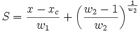
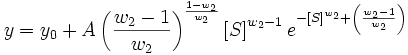

Contents |


Weibull peak function.
Number: 5
Names: y0, xc, A, w1, w2
Meanings: y0 = offset, xc = center, A = amplitude, w1 = width, w2 = width
Lower Bounds: w1 > 0.0, w2 > 0.0
Upper Bounds: none
nlf_weibull3(x,y0,xc,A,w1,w2)
FITFUNC\WEIBULL3.FDF
Peak Functions